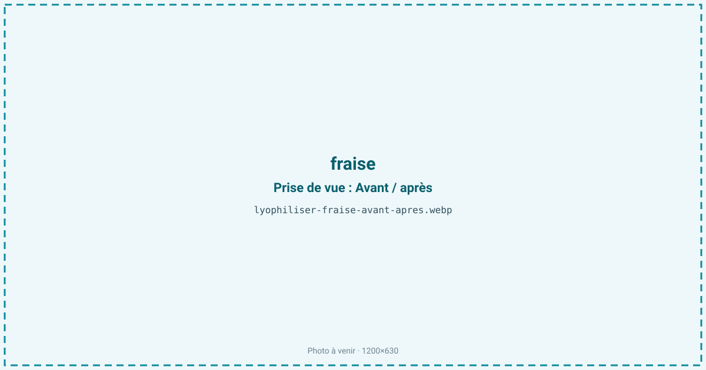
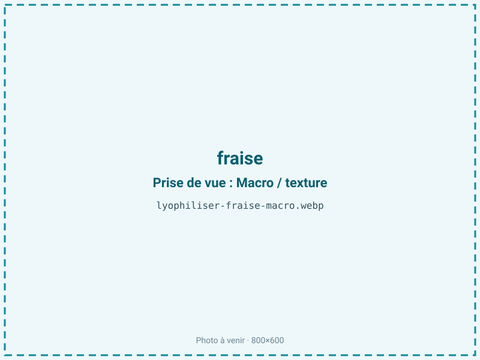
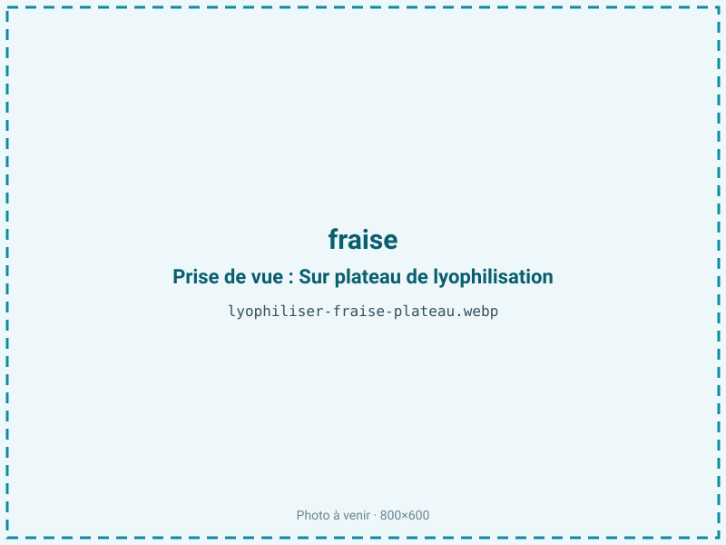
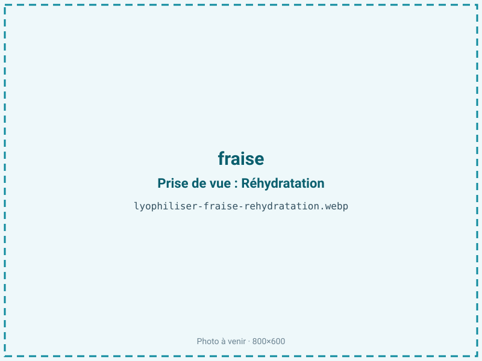

Lyophiliser des fraises
La fraise est un fruit magnifique et terriblement périssable : 91 % d'eau, quelques jours de tenue. Lyophilisée, elle devient un morceau croquant qui fond en bouche, garde sa couleur rouge vive et l'essentiel de sa vitamine C. C'est la référence absolue du fruit lyophilisé, celle par laquelle beaucoup découvrent le procédé.

En bref
Comment fraise se comporte à la lyophilisation
Avec 90 à 91 % d'eau, la fraise est faite d'une chair alvéolaire ponctuée d'akènes en surface, riche en pectines, en sucres simples (5 à 7 % de fructose et glucose) et en anthocyanes qui portent la couleur. À la congélation, l'eau forme des cristaux dans les alvéoles ; à la sublimation, ces vides deviennent une structure poreuse et aérée — c'est ce qui donne le croquant caractéristique.
Le point sensible est le sucre : sa température de transition vitreuse est basse, et une rampe de température trop rapide en séchage primaire provoque un effondrement (collapse) — le morceau se tasse au lieu de rester gonflé. Les akènes, eux, restent croquants et bien visibles. La couleur est remarquablement préservée parce que le procédé n'apporte pas de chaleur qui brunirait le fruit.
Paramètres de cycle
Trancher en épaisseur régulière de 5 à 8 mm : au-delà, le cœur reste humide ; en dessous, le fruit devient trop fragile. Congeler à −30 °C. En primaire, privilégier une montée en température lente et une clayette modérée pour éviter le collapse des sucres. La fraise étant un produit maigre sans lipides à protéger, on peut viser une a_w basse, de 0,20 à 0,30 : descendre est ici favorable à la stabilité, contrairement aux produits gras. Le critère d'arrêt se cale sur une a_w inférieure ou égale à 0,30 et un morceau qui « sonne » sec et cassant.
Pièges connus
- Trancher pour un séchage régulier.
- Hygroscopique : refermer vite, conditionnement barrière.



Variantes & provenance
La variété change le résultat : une Gariguette allongée sèche différemment d'une Charlotte ronde, et une Mara des Bois, plus parfumée mais plus gorgée d'eau, demande un cycle un peu plus long. La maturité est décisive : trop mûre, la fraise est plus sucrée et collapse plus facilement ; sous-mûre, elle manque d'arôme et reste acide. Entière, tranchée ou en poudre, le procédé s'adapte, la tranche donnant le meilleur croquant. La saison et l'origine (plein champ vs hors-sol) modulent la teneur en eau de départ.
Conservation & DLUO
La fraise est un produit maigre : son facteur limitant n'est pas l'oxydation des graisses mais la reprise d'humidité et, à la marge, la dégradation des anthocyanes sous l'effet de la lumière et de l'oxygène. Une a_w basse lui est donc favorable, sans le risque de rancissement propre aux produits gras. Extrêmement hygroscopique, elle se ré-humidifie en quelques minutes à l'air : il faut refermer vite et conditionner en sachet barrière, de préférence opaque. Comptez 12 à 24 mois en barrière, à température ambiante, à l'abri de la lumière.
12 à 24 mois en sachet barrière.
Estimez selon votre emballage :
Face aux autres procédés de séchage
Au séchage à l'air chaud, la fraise brunit, durcit et son sucre caramélise : on obtient un fruit sec dense, loin du croquant recherché. Le micro-ondes sous vide fait mieux mais peine à préserver la couleur et la vitamine C aussi bien que le froid. La lyophilisation gagne sur tous les tableaux — couleur, arômes, texture aérée — ce qui explique qu'elle soit devenue le standard du fruit premium pour l'inclusion.
Marchés & applications
Barres de céréales et mueslis, chocolaterie (inclusions et enrobage), poudre aromatique et colorante naturelle, décor de pâtisserie, en-cas sain pour enfants. Les acheteurs types sont les chocolatiers, les marques de snacking et de petit-déjeuner, et les pâtissiers.
- Céréales et barres
- Chocolaterie et pâtisserie
- En-cas sain
Questions fréquentes — fraise
Quel est le ratio de la fraise lyophilisée ?
Environ 10:1 : il faut à peu près 1 kg de fraises fraîches pour 100 g de fraises lyophilisées, la fraise étant très riche en eau.
Garde-t-elle sa couleur rouge ?
Oui, très bien : l'absence de chaleur préserve les anthocyanes. La couleur reste vive, surtout en conditionnement opaque.
La vitamine C est-elle conservée ?
En grande partie : le séchage à froid la préserve bien mieux qu'un séchage à chaud, qui en détruit une part importante.
Le résultat est-il croquant ou mou ?
Croquant puis fondant : la structure poreuse craque sous la dent avant de fondre. Un morceau mou signale une reprise d'humidité ou un léger collapse.
Entière ou tranchée ?
La tranche de 5 à 8 mm donne le meilleur croquant et un séchage homogène ; l'entière est possible mais plus longue.
Peut-on la réhydrater ?
Oui, partiellement, pour des coulis ou des garnitures. La plupart des usages la gardent sèche, pour le croquant.
Combien de temps se conserve-t-elle ?
12 à 24 mois en sachet barrière opaque à température ambiante. Une fois ouvert, il faut refermer vite car elle reprend l'humidité en minutes.
Faut-il ajouter du sucre ?
Non : la lyophilisation concentre le sucre naturel du fruit. Aucun ajout n'est nécessaire.
Prochaine étape : envoyez-nous 200 g
Vous avez les repères de la fraise. La suite logique : nous envoyer un échantillon et repartir avec une fiche technique sur votre produit — rendement, aw finale, coût au kilo.
Tester la fraise — 250 à 500 €Déductible de votre premier lot.